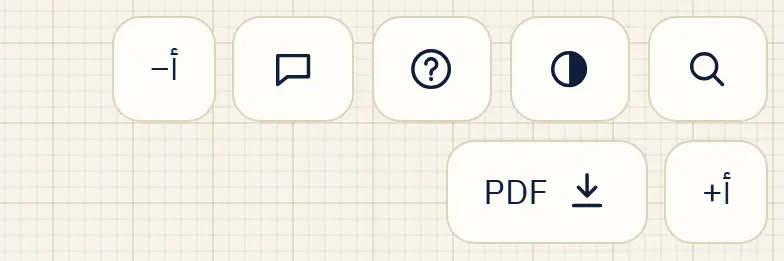
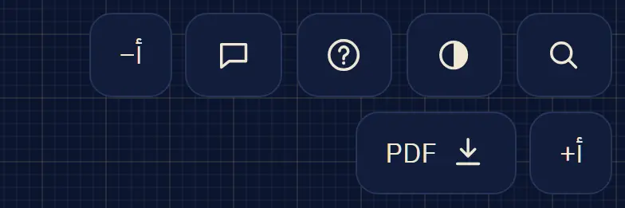
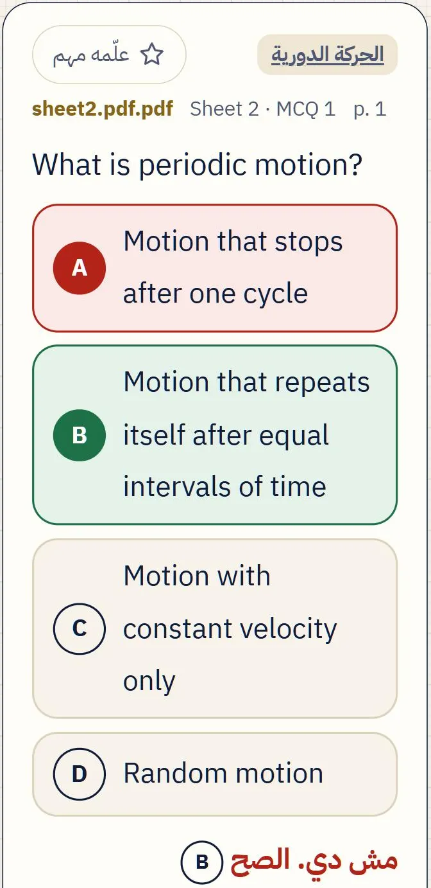
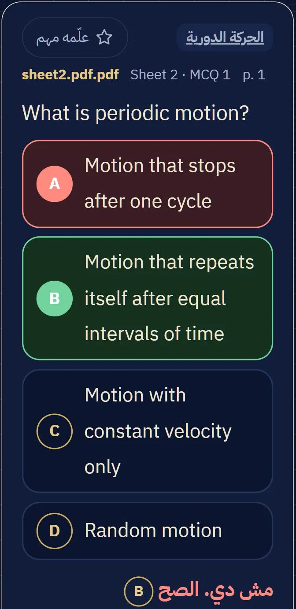
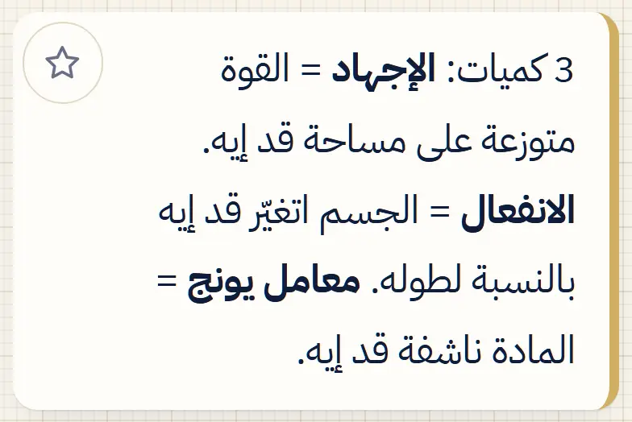
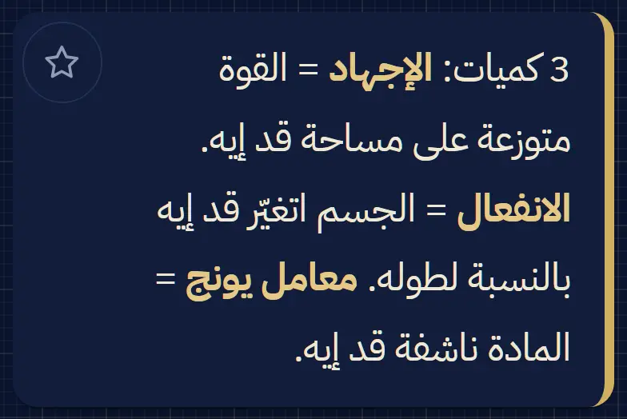
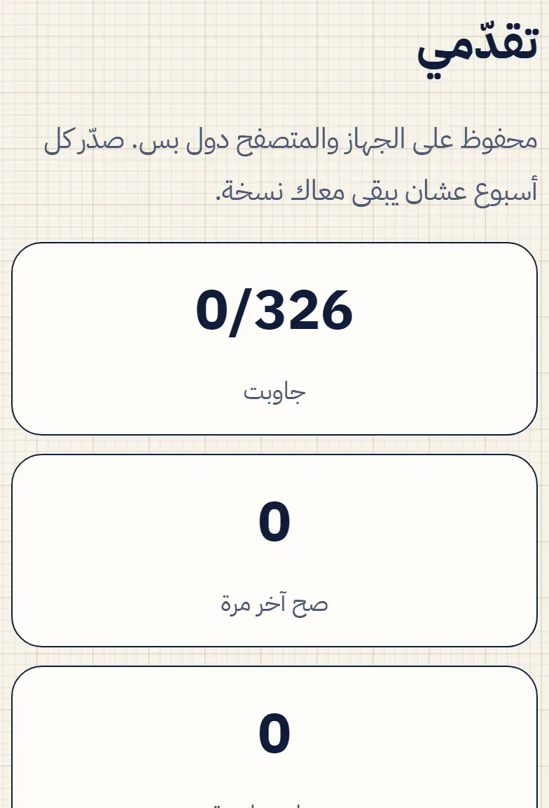
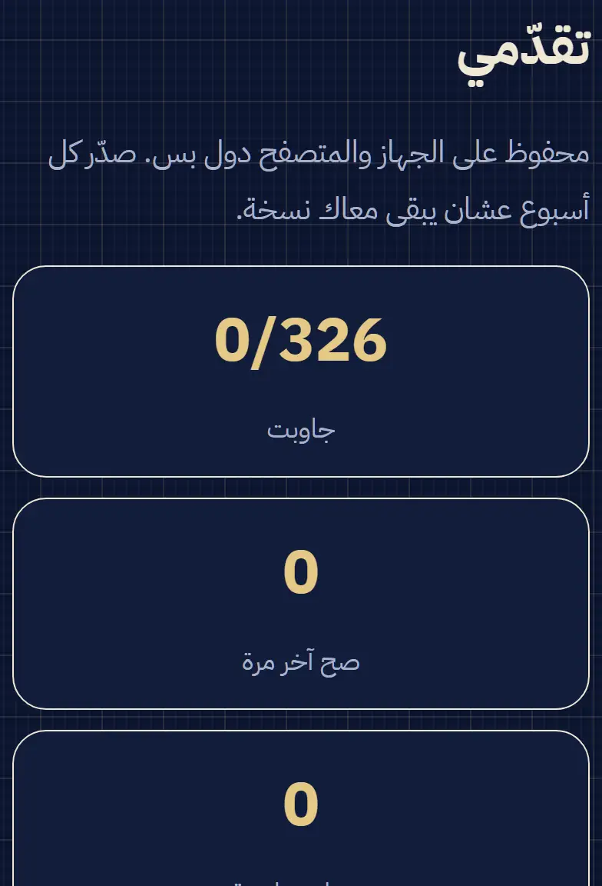
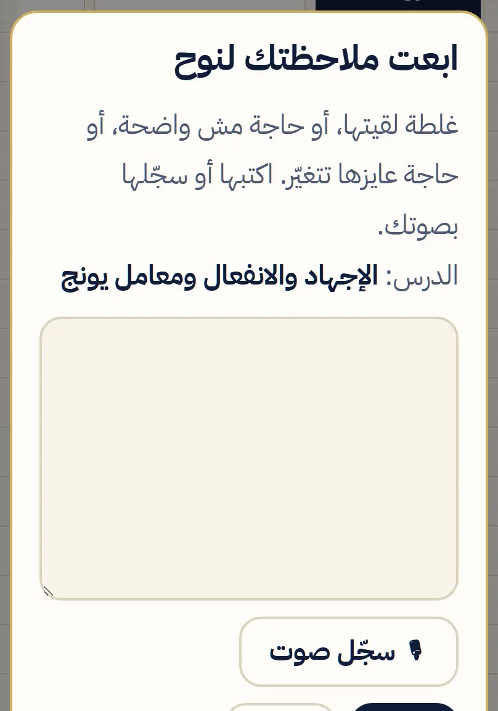
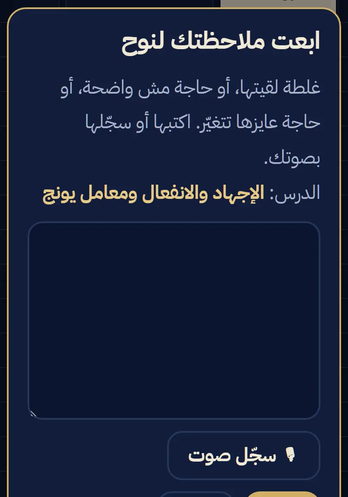

دليل استخدام الموقع
أول مرة تدخل؟ هنا كل حاجة خطوة بخطوة: من أول ما تكتب اسمك، لحد ما تذاكر وتحل وتتابع تقدّمك، حتى من غير نت.
1أول مرة: اسمك ورقمك
أول ما تفتح الموقع، هيطلب منك تعرّفنا بنفسك. ده مرة واحدة بس على كل جهاز.
- اكتب اسمك (ثنائي أو ثلاثي).
- اكتب رقم الواتساب بتاعك (الـ 11 رقم كاملين).
- اضغط حفظ، والمواد هتظهرلك على طول.
ليه الاسم والرقم؟ الاسم عشان نرحّب بيك، وبيتكتب على نسخة المواد اللي بتفتحها. والرقم عشان توصلك التحديثات، ونتأكد إنك معانا في الجروب.
عندك حساب على جهاز تاني؟ ماتسجّلش من جديد: اضغط عندي حساب على جهاز تاني واكتب كود الربط (شوف الخطوة 11)، فتقدّمك كله ييجي معاك.
2ضيف الموقع لشاشة موبايلك
كده الموقع بيبقى أيقونة زي أي تطبيق، بتفتحه بلمسة من غير ما تدوّر على اللينك.
آيفون (Safari)
- افتح الموقع في Safari.
- اضغط زرار المشاركة (مربع طالع منه سهم لفوق). مش لاقيه؟ اضغط التلات نقط الأول.
- اختار إضافة إلى الشاشة الرئيسية، وبعدها إضافة.
أندرويد (Chrome)
- افتح الموقع في Chrome.
- اضغط التلات نقط اللي فوق.
- اختار تثبيت التطبيق أو إضافة إلى الشاشة الرئيسية.
⚠ على الآيفون: الأيقونة ليها حفظ لوحدها، منفصل عن Safari. فلو فتحتها وطلبت اسمك تاني، اضغط عندي حساب على جهاز تاني واربطها بالكود (الخطوة 11)، بدل ما تبدأ من الصفر. وبعدها ذاكر من الأيقونة دايماً.
وعلى الكمبيوتر؟ افتح اللينك عادي في أي متصفح.
3افتح مادة
في الصفحة الرئيسية، تحت «المواد»، كل مادة ليها كارت فيه عدد الدروس والأسئلة. وكل كارت فيه زرارين:
- افتح المادة: بيفتح ملف المذاكرة على طول (الدروس والأسئلة). هنا هتقضي أغلب وقتك.
- الملفات والملاعب: صفحة المادة، وفيها ملفات الطباعة (PDF)، والملاعب (رسومات بتتحرك وتتحكم فيها)، والمحاضرات ودروسها.
أول مرة تفتح أي مادة لازم يبقى فيه نت. بعدها بتتحفظ على جهازك، ويتكتب تحت الكارت «✓ محفوظة، وبتفتح من غير نت».
ولو حد بعتلك كود مادة (مواد خاصة بمجموعة معيّنة)، اضغط عندي كود مادة تحت المواد واكتبه.
4جوّه المادة: الأزرار والتابات
أول مرة تفتح المادة، اضغط ابدأ بأول درس. والخريطة اللي فوق في تاب «الدروس» بتوديك لأي درس.
الأزرار اللي فوق


التابات
معنى كل علامة في الشرح (زي «➕ إضافة مني»، و«⚠»، والسهم في آخر المعادلة) في دليل الرموز.
5حل سؤال وشوف الحل
الأسئلة في تاب «بنك الأسئلة»، وفي آخر كل درس. فيه نوعين:
اختيار من متعدد
- قبل ما تختار، قول إنت متأكد ولا لأ: واثق أو مش متأكد.
- اضغط على الاختيار. الصح بيبقى أخضر، والغلط أحمر.
- تحتها بيظهر «الحل بالتفصيل»، وليه الصح صح، وليه كل اختيار تاني غلط.
- عايز تجرّب تاني؟ جاوب تاني.
لو كنت واثق وغلطت، السؤال بيتسجّل «غادر». دي أخطر غلطات قبل الامتحان، وبتلاقيها لوحدها في «تقدّمي».
مسائل بخطوات
- حلّها على ورقة الأول.
- اضغط اكشف أول خطوة، وبعدها الخطوة الجاية واحدة واحدة، وقارن بحلّك.
- أو اكشف الحل كله مرة واحدة.
عايز تذاكر من الحلول على طول؟ في «بنك الأسئلة»، تحت «طريقة العرض»، اختار اعرض كل الإجابات مرة واحدة. واسم الدرس اللي فوق السؤال بيرجّعك لشرحه.


6علامة «مهم»
علّم أي حاجة عايز ترجعلها قبل الامتحان:
- في الشرح: اضغط النجمة اللي في ركن الجزء، فتنوّر دهبي.
- في الأسئلة: اضغط علّمه مهم.
كل اللي علّمته بيتجمع في تاب «المهم»، ومنه:
- درّبني على الأسئلة المهمة.
- صدّر لأنكي: كروت مراجعة لبرنامج أنكي على الكمبيوتر (لو بتستخدمه).
وفي بعض المواد، «المهم» فيه فهرس: تختار المحاضرة، والنوع (شرح أو أسئلة)، والدرس.
ولو عايز تشيل العلامة، اضغط النجمة تاني.


7«سجل غلطاتي» والتدريب
كل سؤال بتحلّه بيتسجّل. وفي تاب «تقدّمي» هتلاقي: جاوبت كام، وصح آخر مرة كام، ومحتاج مراجعة كام. وتحتهم طرق التدريب:
- سجل غلطاتي: كل سؤال غلطت فيه ولو مرة، حتى لو حلّيته صح بعدها. بيفضل هنا لحد ما تشيله بنفسك. اضغط راجعهم تتدرّب عليهم، أو اعرض القايمة تشوفهم.
- الأسئلة الغادرة: اللي كنت واثق فيها وطلعت غلط.
- اللي غلطت فيه آخر مرة: كل سؤال آخر إجابة ليك فيه كانت غلط.
- اللي لسه ماجاوبتهوش، وتكرار متباعد على البنك كله.
- حسب المحاضرة والدرس: درّبني جنب كل درس.
التكرار المتباعد يعني: السؤال اللي تغلط فيه يرجعلك بعد 5 أسئلة، ولو صلّحته يرجع مرة أخيرة بعد 10 عشان يثبت.
وفي «بنك الأسئلة» فيه فلتر سجل غلطاتي كمان، عشان تشوف الأسئلة دي بحلولها.


8امتحان محاكاة
تاب «امتحان محاكاة» بيعملك امتحان بأسئلة عشوائية، والاختيارات بتتلخبط كل مرة.
- اختار نوع الأسئلة: اختيار من متعدد، أو مسائل، أو الاتنين.
- اختار العدد: 10، أو 20، أو الكل.
- اختار محاضرة كاملة أو دروس معيّنة، وابدأ.
- جاوب، وبعدين سلّم. النتيجة والحل بالتفصيل بيظهروا بعد التسليم.
المسائل بتحلها على ورقة، وبعد التسليم بتشوف الحل وتقيّم نفسك.
امتحان بوقت: في بعض المواد، أول التاب فيه كارت امتحان بعدد أسئلة ثابت وعدّاد تنازلي بيسلّم لوحده لما الوقت يخلص. وفي الآخر بتشوف نتيجتك في كل محاضرة، والدروس اللي محتاج تذاكرها.
9«ملاحظاتك»: ابعت أي غلطة
لقيت غلطة؟ حاجة مش واضحة؟ عايز حاجة تتغيّر؟ ابعتها من جوّه المادة:
- اضغط فقاعة الكلام اللي فوق.
- اكتب ملاحظتك، أو 🎙 سجّل صوت، أو 🖼 ضيف صورة.
- اضغط 📍 حدد الجزء بالظبط، وبعدين اضغط على الجزء نفسه أو السؤال، فالمكان يوصل من غير ما تشرحه.
- اضغط ابعت.
الملاحظة بتوصل لنوح على طول، وممكن يوصلك رد في رسالة فوق الصفحة. وكل تصحيح بيتكتب في تاب «التحديثات».


10«حسابك» ووقت مذاكرتك
اضغط حسابك (أو اسمك) في الشريط اللي فوق في الموقع. الصفحة فيها:
- تقدّمك في الأسئلة: في كل المواد مع بعض، وكل مادة لوحدها.
- وقت مذاكرتك: النهاردة، وآخر أسبوع أو شهر، ومن الأول. ورسمة لكل يوم، ووقت كل مادة.
- أسئلة غلطت فيها: آخر الأسئلة اللي غلطت فيها في كل المواد، والمكتوب عليه «اتصلّحت» آخر إجابة ليك فيه كانت صح.
- آخر مرات ذاكرت فيها، وأجهزتك.
الوقت بيتحسب لوحده وانت فاتح المادة. ولو بتذاكر على أكتر من جهاز، اربطهم (الخطوة 11) عشان وقتك وتقدّمك يتجمعوا هنا. وتقدر تعدّل اسمك أو رقمك من نفس الصفحة.
11اربط جهاز تاني بالكود
بتذاكر على الموبايل والكمبيوتر؟ اربطهم مرة واحدة، وبعدها أي إجابة أو علامة «مهم» أو غلطة على جهاز بتوصل للتاني لوحدها، في كل المواد.
على الجهاز القديم (اللي مسجّل عليه)
- افتح الصفحة الرئيسية، وانزل لكارت «حسابك على أكتر من جهاز».
- اضغط اربط جهاز تاني، فيظهرلك كود من 6 أرقام.
على الجهاز الجديد
- افتح الموقع، وفي كارت «عرّفنا بنفسك» اضغط عندي حساب على جهاز تاني.
- اكتب الكود، واضغط اربط الجهاز ده.
الكود بيشتغل مرة واحدة، ولمدة قصيرة. لو قالك «الكود غلط أو خلص»، طلّع كود جديد من الجهاز القديم. والربط محتاج نت على الجهازين.
عايز تتأكد إن كله وصل؟ اضغط زامن دلوقتي في نفس الكارت.
12المذاكرة من غير نت
- افتح الموقع مرة بالنت. هيظهرلك: «✓ الموقع اتحفظ على جهازك، وبيفتح من غير نت».
- افتح كل مادة محتاجها مرة بالنت، فتتحفظ هي كمان.
- بعد كده افتحها في أي وقت، حتى في المواصلات أو والنت فاصل.
إجاباتك وعلاماتك وانت من غير نت بتتحفظ على جهازك، وأول ما النت يرجع بتتزامن مع حسابك لوحدها.
ولما مادة تتحدّث، النسخة الجديدة بتنزل لوحدها أول ما تفتحها والنت شغال، وتاخد مكان القديمة. يعني المساحة على موبايلك مابتكبرش.
13ملف PDF للطباعة
عايز تذاكر من ورق، أو تقرا من غير الموقع؟ كل مادة ليها ملف جاهز: الغلاف، والفهرس، والدروس بالرسومات، ومسائل الشيت وحلولها.
- جوّه المادة اضغط زرار PDF اللي فوق، أو من صفحة الملفات والملاعب.
- اختار المادة كاملة، أو محاضرة لوحدها (أصغر وأسرع).
الملف بينزل مرة، وبيفضل على جهازك. بس الأسئلة التفاعلية والتدريب وحفظ إجاباتك في الموقع بس، مش في الملف.
★مميزات الموقع
لسه فيه حاجة مش واضحة؟ معنى كل علامة في دليل الرموز، أو ابعتها من «ملاحظاتك» جوّه أي مادة.